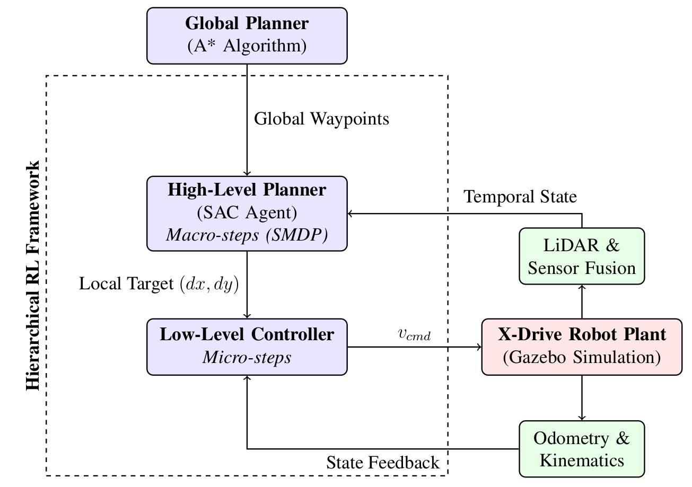
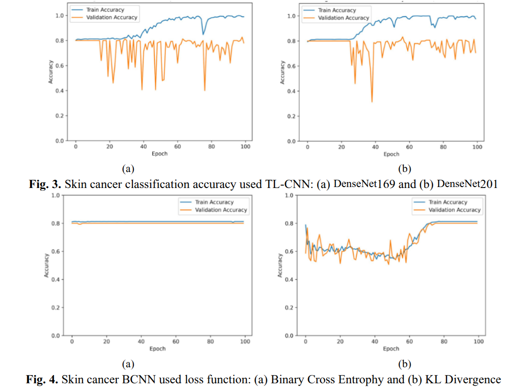
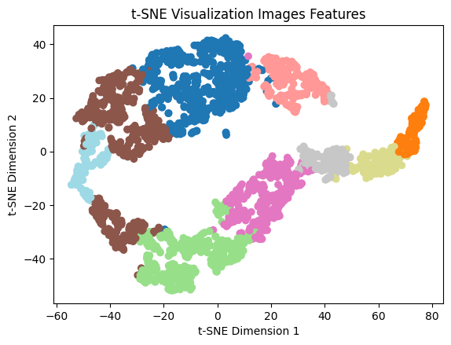
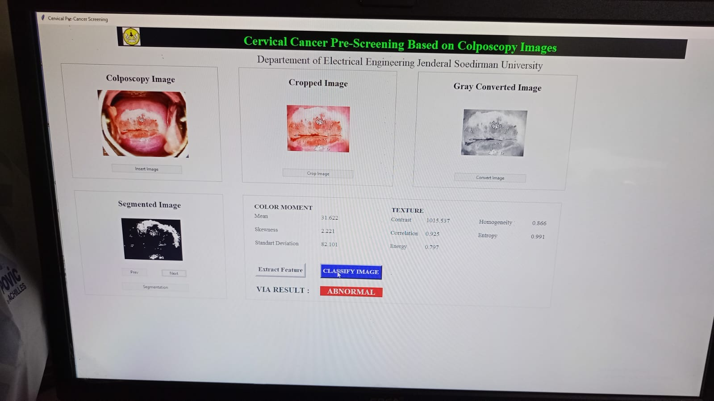

Research

Low-Level DRL for Drift Compensation
Developed a Deep Reinforcement Learning (DRL) Multi-Input-Multi-Output (MIMO) controller to autonomously counteract the non-linear kinematic slip of an X-Drive robot. Utilizing a discrete PPO agent, the system overcame traditional PID limitations and improved the success rate from 25% to 70% while maintaining momentum.

Hierarchical Reinforcement Learning (HRL) Navigation
Constructed an HRL navigation stack that robustly decouples macroscopic spatial planning from microscopic kinematic controt. Utilizing a Semi-Markov Decision Process (SMDP) and temporal frame stacking to resolve Partial Observability (POMDP), the framework achieved near-perfect success rates in dynamic environments and exceptional cross-track precision of less than 0.01 meters in complex maze.

Skin Cancer Classification
Built a robust Bayesian convolutional neural network (TL-CNN) for skin cancer classification. The Bayesian approach reduced overfitting to 1.3%, helping the model generalize more effectively beyond its training data. This improvement makes the system more reliable for analyzing dermatological images and supports greater confidence in its classification results.

Breast Cancer Subtypes Unsupervised Clustering
Conducted at the Computational System Biology Lab, Nara Institute of Science and Technology (NAIST) Japan. Developed a novel topology-based pipeline using deep CNN backbones, k-means, and hierarchical agglomerative clustering to accurately partition 9 distinct breast cancer subtypes from X-ray mammograms. Evaluated mathematical convergence and class separation stability utilizing t-SNE projections.

Cervical Cancer Pre-Screening
Engineered a Python-based cervical cancer pre-screening system using colposcopy images. Implemented a Support Vector Machine (SVM) classifier to distinguish image patterns associated with cervical cancer and support early detection. The system provides a computer-assisted approach that can help organize image-based screening before further clinical examination.